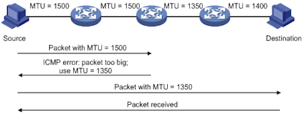
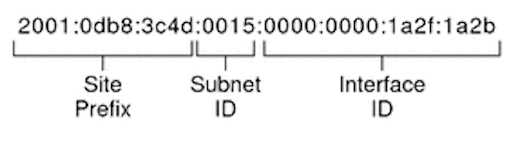

Das letzte /8 wurde angebrochen. Wer neue IPv4 Adressen haben will, muss auch immer ein IPv6 Netz dazunehmen.
IPv4 != IPv6
IPv4: 172.20.1.100/16
IPv6: 2001:6f8:900:90f6:bc69:ec97:29ab:8c34
=======
Oh hey, these are some notes. They'll be hidden in your presentation, but you can see them if you open the speaker notes window (hit 's' on your keyboard).
Nicht nur länger sondern ...
komplett anderer Header
keine Subnetzmaske mehr
neue Zuteilungsmöglichkeit über RA
keine Broadcasts mehr
Clients weisen sich selbst Adressen zu
neue Minimum MTU
verschieden Schreibweisen möglich
>>>>>>> FETCH_HEAD
IPv6 Header
Fragmentation

Adressaufbau

Adressvergabe auf dem Interface
1. Link Local
Link Local Range: fe80::/10
BSP: fe80::7ed1:c3ff:fe76:59d0%en1
Adressvergabe auf dem Interface
2. Site Local
Site Local Range: fec0::/10
Seit 2004 decprecated
Adressvergabe auf dem Interface
3. Unique Local Address
Unique Local Address Range: fd00::/8
BSP: fd9e:21a7:a92c:2323::1
Konzept entspricht in etwa den privaten IPv4 Adressen
Adressvergabe auf dem Interface
4. Loopback
Loopback: ::1/128
Adressvergabe auf dem Interface
5. Multicast
Multicast: ff00::/8
ff01::1, ff02::1: - All Nodes
ff01::2, ff02::2, ff05::2 - All Routers
Adressvergabe auf dem Interface
6. Global Unicast - Öffentliche Adressen
Global Unicast Range: alles was noch nicht anderweitig reserviert ist
0:0:0:0:0:ffff::/96 - IPv4 Mapped Addresses
64:ff9b::/96 - NAT64
2000::/3 ( 2000… bis 3fff… ) bezeichnet den weltweit routbaren Bereich
Adressvergabe auf dem Interface
6.1. Global Unicast - Öffentliche Adressen
2000::/3 unterteilt man in
2001::/32 - wird vom Teredo Tunnel benutzt
2002::/16 - 6to4 Tunnel
2003, 240, 260, 261, 262, 280, 2a0, 2b0 und 2c0 können auch vergeben werden, sind aber noch nicht im großen Umfang verteilt
möglicher Ablauf der Autokonfiguration
Der Client weißt sich selbst eine Link Local Adresse zu (fe80::/10)
Client starte Neighbour Discovery (ND) indem ein Anfrage an die Multicast Adresse ff02::2 (all Routers) gesendet wird (Router Solicitation)
Die angesprochenen Router senden die möglichen Präfixe als Router Advertisment zurück
Der Client hängt an den Präfix seinen Interface Identifier an, den er schon für die Link Local Adresse benutzt hat
möglicher Ablauf der Autokonfiguration
Der Client weißt sich selbst eine Link Local Adresse zu (fe80::/10)
Die Router senden in regelmäßigen abständen Router Advertisments
Der Client hängt an den Präfix aus dem RA seinen Interface Identifier an, den er schon für die Link Local Adresse benutzt hat
Privacy
Laut dem ursprünglichen Entwurf der IETF wurde für den Interface Identifier die MAC Adresse des Interfaces benutzt.
Die Clients sind dadurch immer identifizierbar, weil sich die MAC Adresse nicht ändert!
Privacy Extension
Eine Lösung bieten die sogenanten Privacy Extensions, die vom Betriebsystem implementiert werden müssen. Dabei wird für das Interface immer wieder eine neue temporäre Adresse generiert, die für abgehenden Traffic benutzt wird.